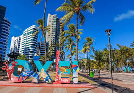
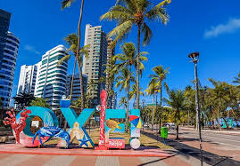

Sobre a Cidade
Recife, capital de Pernambuco, é uma cidade vibrante e histórica, carinhosamente apelidada de "Veneza
Brasileira" devido aos seus rios, pontes e canais que cortam a paisagem urbana. Com uma rica herança
cultural que se manifesta em sua arquitetura colonial colorida, música contagiante como o frevo e o
maracatu, e uma culinária saborosa influenciada por diversas culturas, Recife oferece uma
experiência única.
Além de sua beleza e cultura, Recife se destaca como um polo tecnológico e de inovação crescente,
impulsionado pelo Porto Digital, um dos maiores parques tecnológicos da América Latina. Esse
ambiente dinâmico, aliado à presença de universidades e instituições de pesquisa de excelência como
a UFPE e a Fiocruz, tem fomentado o desenvolvimento em áreas como tecnologia da informação, saúde
digital e, cada vez mais, a bio-inovação.
Com um forte potencial em biotecnologia agrícola devido ao setor agrícola regional e à rica
biodiversidade do Nordeste, e um crescente foco em saúde e biotecnologia da saúde impulsionado por
um importante polo médico-hospitalar, Recife se posiciona como um centro estratégico para o futuro
da bio-inovação no Brasil. Sua conectividade, talento local e ecossistema em expansão a tornam um
local promissor para empresas, pesquisadores e eventos que buscam moldar o futuro da vida através da
biotecnologia.
Durante o evento, você poderá conhecer o famoso Parque da Tecnologia, a Praça dos Inventores e a
tradicional Feira da Inovação.


 
